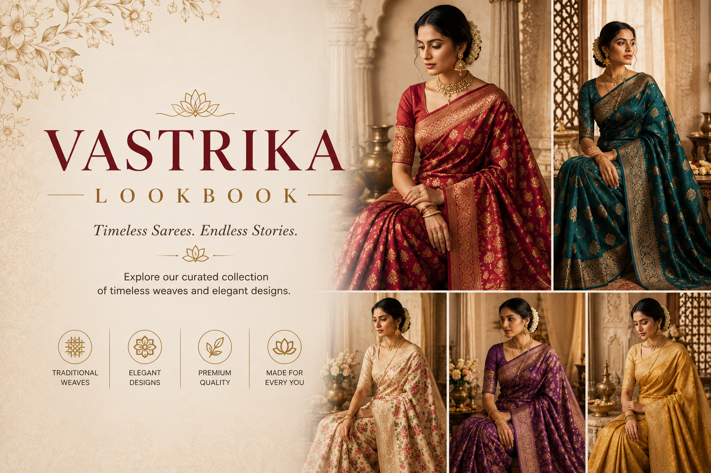
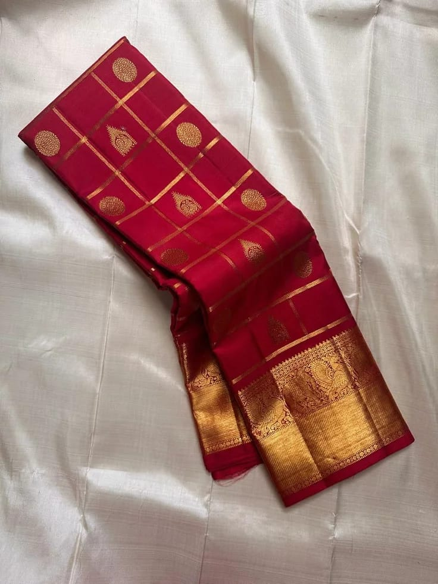
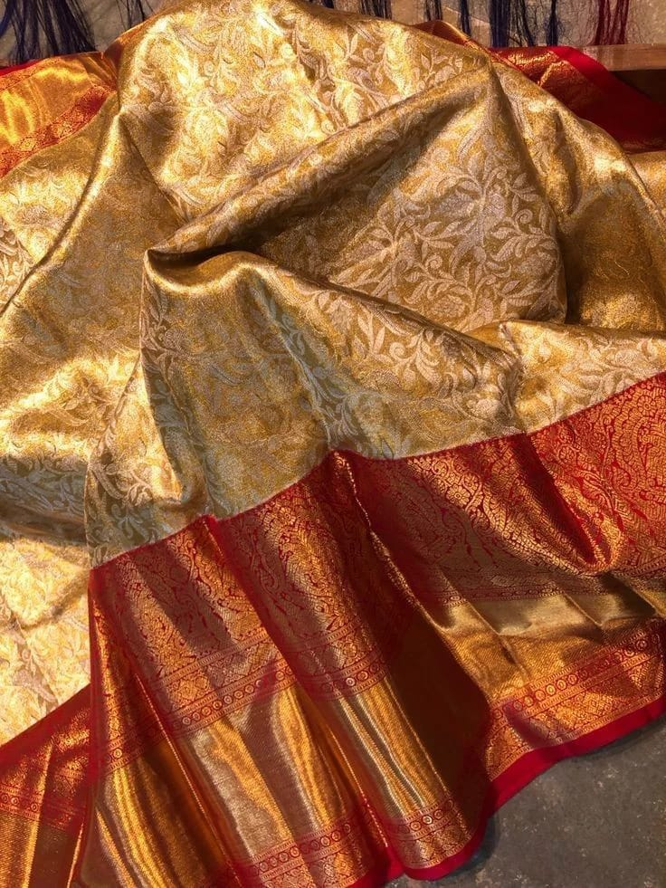
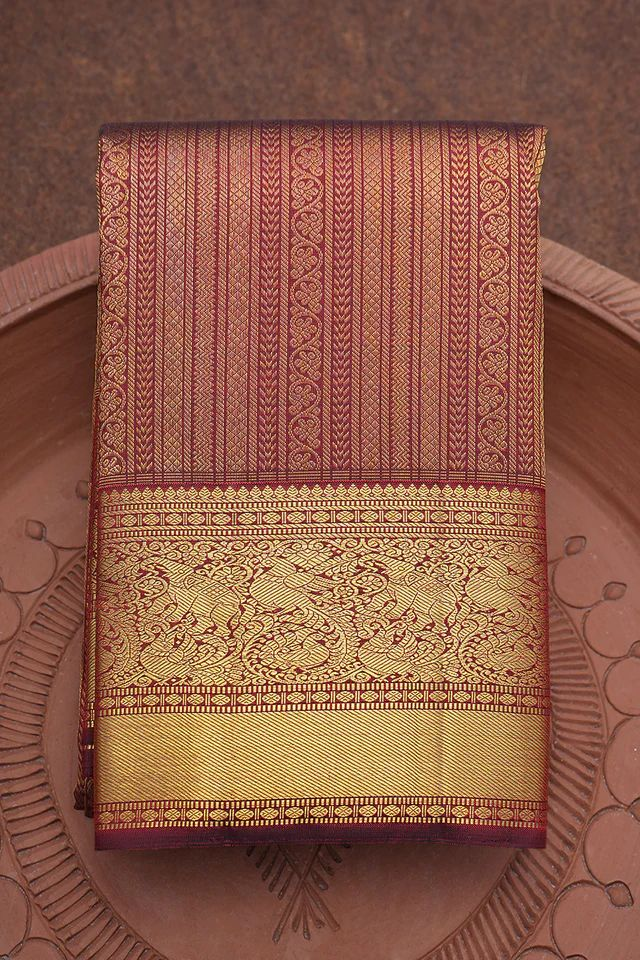
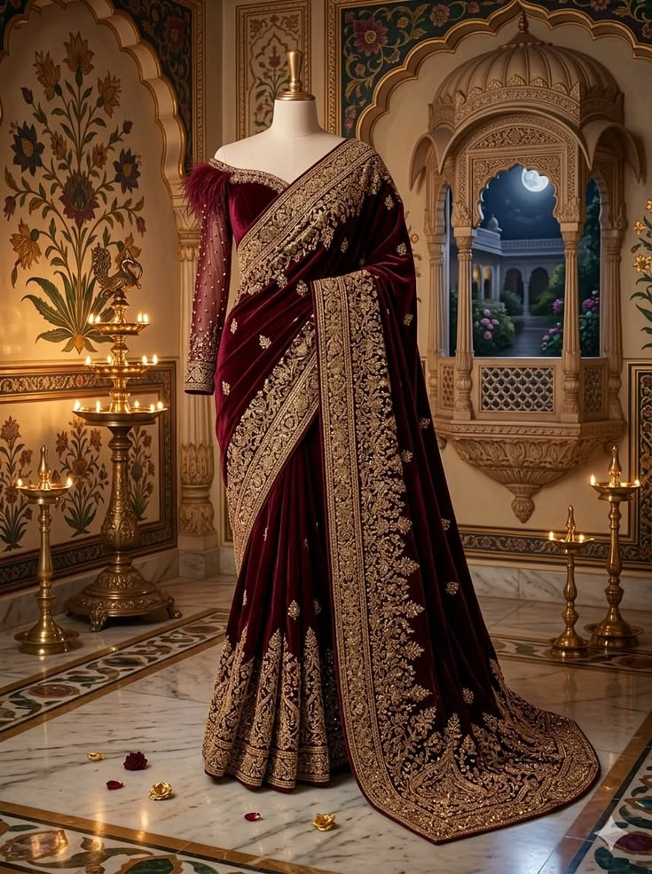
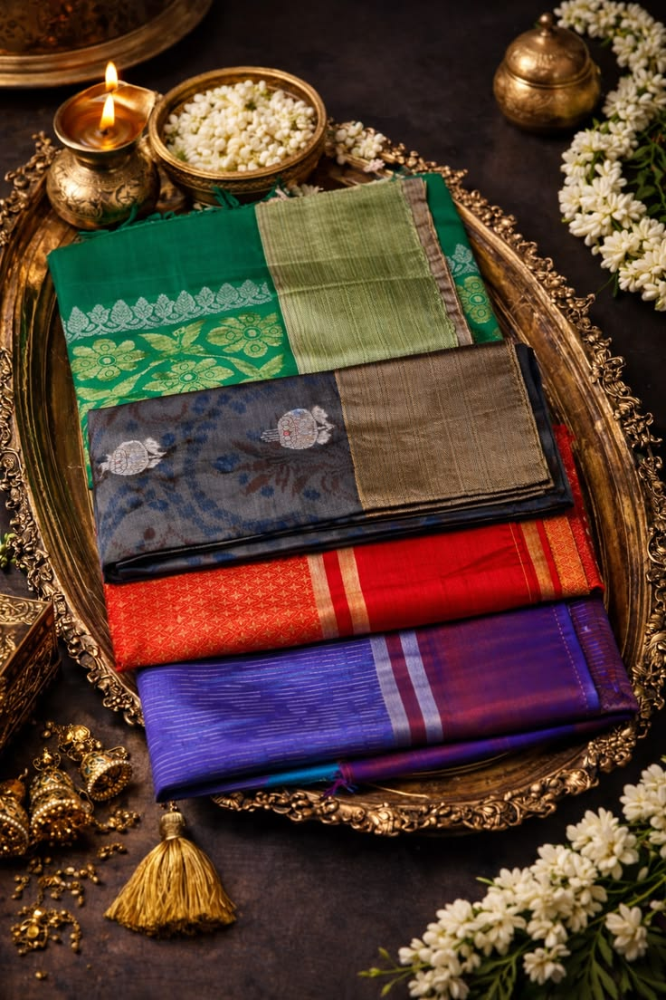
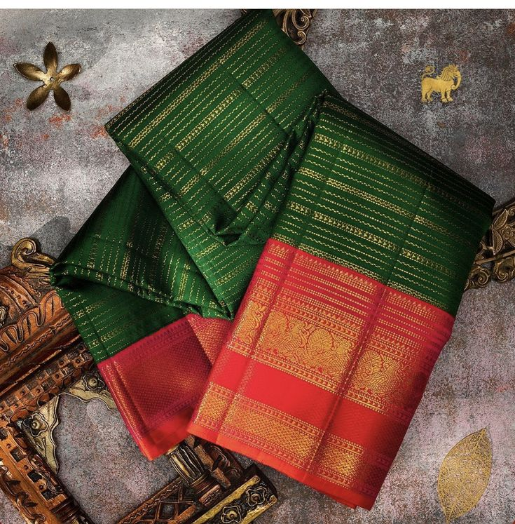
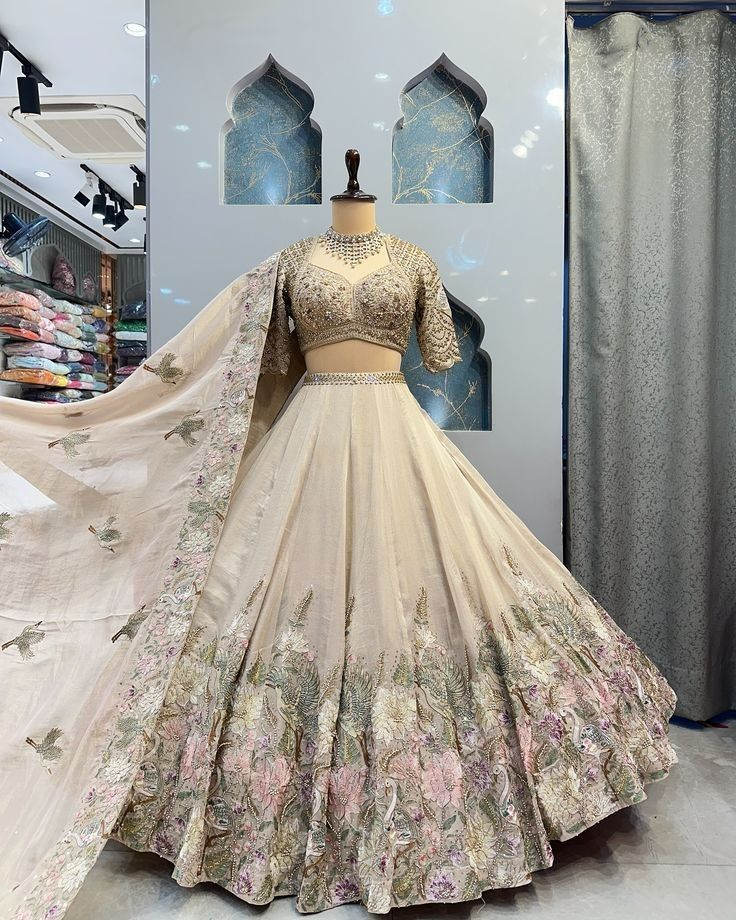

Explore our exclusive lookbook featuring handwoven sarees styled for weddings, festivals, celebrations and modern occasions. Each image captures the beauty, craftsmanship and cultural heritage behind India's finest weaving traditions.

From luxurious Kanjivaram silks to contemporary designer drapes, our lookbook showcases sarees in real-world styling inspirations. Discover bridal glamour, festive elegance and everyday sophistication through carefully curated imagery.

Traditional bridal Kanjivaram.

Rich zari woven Banarasi.

Premium wedding silk.

Luxury handcrafted masterpiece.

Bright colors and rich textures.

Traditional South Indian styles.

Elegant drapes for celebrations.
Every saree featured in our lookbook is sourced directly from artisan communities across India. From dyeing and warping to weaving and finishing, each step reflects generations of skill and dedication.